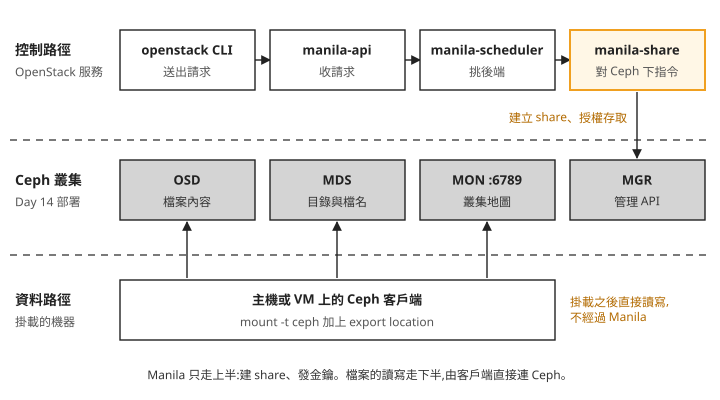
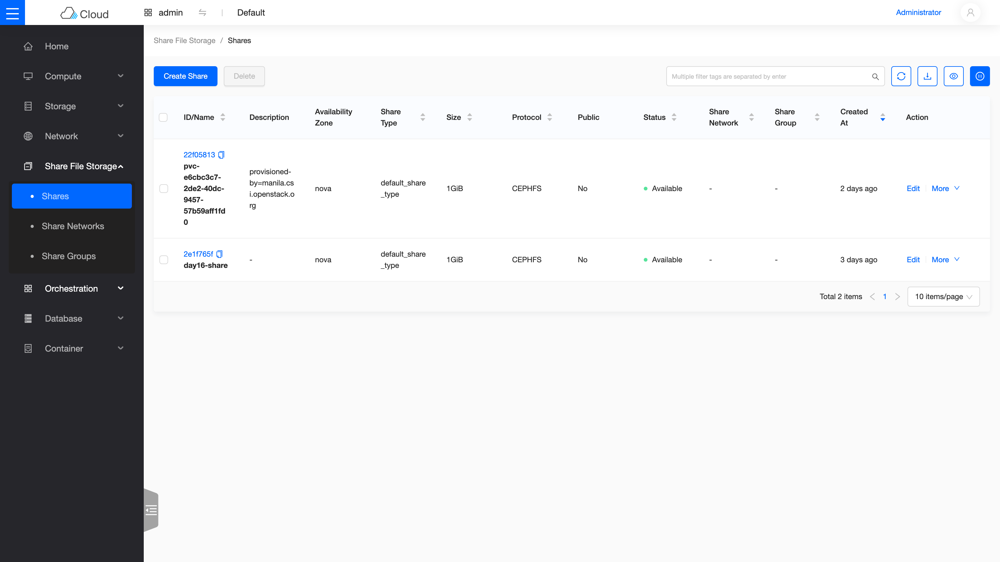
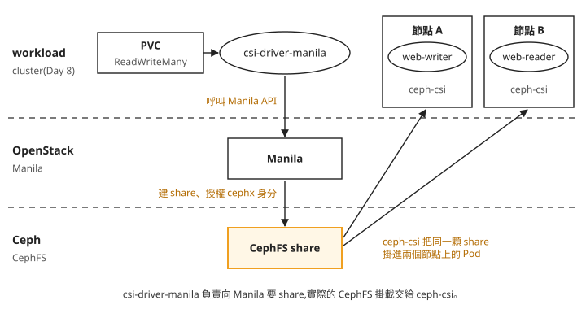
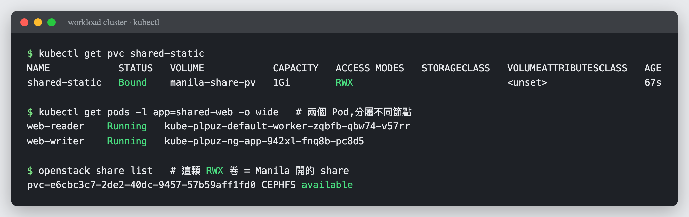
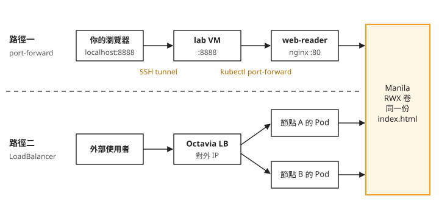

Day 16: Manila——用 CephFS 讓多台機器同時讀寫同一份資料¶
假設你在這朵雲上用兩台 VM 跑同一個網站,前面放負載平衡器分流。使用者上傳的圖片存在其中一台,另一台就讀不到。直覺的做法是開一顆 Cinder volume 當共用的圖片目錄,但 Day 3 已經看過,本課 Day 3 的 LVM volume 配置一次只 attach 到一台 VM,不能直接拿來當跨機共用目錄。Cinder 另有需後端與 volume type 支援的 multiattach;即使同時掛到多台,檔案系統與應用仍須能協調共用存取。改成在兩台之間定時同步檔案,又會出現某一台還沒同步到的空窗。
這一章部署 OpenStack 的共享檔案服務 Manila,後端用 Day 14 立起來的 Ceph。做完之後,你會在主機上掛載一個由 Manila 開出來的網路資料夾,寫入檔案再讀回來;章末的選讀段落再說明它如何與 Day 8 的 Kubernetes cluster 整合,以及如何判讀 PVC、Pod 與 share 的狀態。讀完之後,遇到「多台機器要同時讀寫同一份資料」的需求,你能判斷該開 Manila share 而不是 Cinder volume;share 掛不上時,也能分辨問題出在 Manila 這一側(share 沒建起來、沒有授權),還是 Ceph 這一側(連不到、金鑰不對)。
三種儲存怎麼分¶
到這一章為止,這朵雲已經有兩種儲存,加上今天的第三種,差別在使用方式:
| 怎麼用 | 同時使用者 | 適合的場景 | |
|---|---|---|---|
| 區塊(Cinder,Day 3 的 LVM 配置) | 掛成 /dev/vdb,自己分割、格式化 |
本課配置為一台機器 | 資料庫的資料碟 |
| 物件(RGW,Day 15) | 透過 HTTP API 存取,不掛載 | 不限 | 備份、映像檔、靜態資源 |
| 檔案(Manila,今天) | 掛成網路資料夾,已經是現成的檔案系統 | 多台機器同時讀寫 | 共用的上傳目錄、多台機器跑同一個應用時的共同目錄 |
Manila 管的單位叫 share:一個有容量上限、可以被多台機器掛載的網路資料夾。AWS 上對應的服務是 EFS。Manila 本身不存檔案,它負責在後端儲存系統上把 share 建出來、設定容量上限、決定誰可以掛載;檔案實際存在後端,這一章的後端就是 Ceph 的檔案系統 CephFS。
Manila 只管建立和授權,讀寫直接走 Ceph¶
Manila 對接 CephFS 有兩種方式。這一章用的是 CephFS native:要掛載的機器自己當 Ceph 客戶端,用 Ceph 的協定直接連到 Ceph。另一種是在中間放一台 NFS 服務,NFS 是透過網路存取共用檔案的協定,客戶端用它掛載,本課沒有實作。
客戶端掛載時要用的位址叫 export location,在 CephFS native 模式下包含 Ceph MON 的位址與 share 在 CephFS 裡的路徑。建立 share 後可以向 Manila 查詢這個位址。
把 Manila 的服務和 Ceph 的角色放在一起看,跟 Day 3 的 Cinder 一樣能分成控制路徑和資料路徑兩半:

我們可以從圖上看到兩件事:
- Manila 的三個服務只出現在上半。
manila-share是跟 Ceph 打交道的那一個,它透過 Ceph MGR 的管理 API 建 share、設定誰可以存取,不碰檔案本身。所以待會兒給 Manila 的 Ceph 身分只需要很少的權限。 - 掛載之後的讀寫完全不經過 Manila。 客戶端從 MON 拿到叢集地圖,目錄和檔名找 MDS(Day 14 提過的檔案中繼,只有用 CephFS 才需要),檔案內容直接讀寫 OSD。這也決定了除錯的順序:share 建不起來或狀態不對,查上半的 Manila 服務;share 是
available、卻掛不上或讀寫失敗,查下半,也就是掛載的機器連不連得到 Ceph、金鑰對不對。
步驟 1:在 Ceph 建檔案系統和 Manila 用的身分¶
這一步全在 Ceph 這一側,跟 Day 14 一樣透過 cephadm shell 下指令。三行分別做三件事:建一個叫 manila_fs 的 CephFS;關掉一項單機一定會出現的健康警告;替 Manila 建一個專用的 Ceph 身分。
sudo ./cephadm shell -- ceph fs volume create manila_fs
sudo ./cephadm shell -- ceph fs set manila_fs standby_count_wanted 0 # 單機沒有備援 MDS,關掉這項健康檢查
sudo ./cephadm shell -- ceph auth get-or-create client.manila mon 'allow r' mgr 'allow rw'
ceph fs volume create 建檔案系統時,cephadm 會自動替它部署 MDS。CephFS 預設希望有一台待命的 MDS 隨時接手,單機只有一台,不關掉 standby_count_wanted 就會一直出現健康警告。等 MDS 起來之後,ceph fs status manila_fs 會顯示 MDS 狀態為 active。
第三行建的是一個 cephx 身分。cephx 是 Ceph 的認證機制,每個要連 Ceph 的程式都用一個名字(這裡是 client.manila)加一把金鑰登入,能做什麼由後面的權限決定。client.manila 只拿到 mon 'allow r'(讀叢集地圖)和 mgr 'allow rw'(使用 MGR 的管理 API),沒有任何 OSD 或 MDS 的權限,對應的正是上一節圖上的事實:Manila 只透過 MGR 管理 share,不讀寫檔案。這組權限的出處是 Manila CephFS driver 的官方文件。
建好檔案系統後,ceph health 可能出現 too many PGs per OSD。PG 是 Ceph 把 pool 裡資料分組、分配給 OSD 的單位。這是新的 pool 讓單一 OSD 承擔的 PG 數超過上限,處理方式見疑難排解:CephFS 建好後出現 too many PGs per OSD。
步驟 2:把 Ceph 設定檔和金鑰交給 Kolla¶
manila-share 容器要連 Ceph,需要兩個檔案:Ceph 的連線設定 ceph.conf,和 client.manila 的金鑰檔 keyring。Day 1 講過,某個服務需要的額外設定放在 /etc/kolla/config/ 底下對應的目錄,deploy 時 Kolla 會把它們放進容器。Manila 對應的目錄是 /etc/kolla/config/manila/:
sudo mkdir -p /etc/kolla/config/manila
# ceph.conf:用官方指令產生「最小版」,再把行首空白拿掉
sudo ./cephadm shell -- ceph config generate-minimal-conf | sed 's/^[[:space:]]*//' \
| sudo tee /etc/kolla/config/manila/ceph.conf
# keyring:同樣去掉行首空白
sudo ./cephadm shell -- ceph auth get client.manila | sed 's/^[[:space:]]*//' \
| sudo tee /etc/kolla/config/manila/ceph.client.manila.keyring
這段有兩處要照做:
- 兩個
sed都不能省。generate-minimal-conf和ceph auth get的輸出,每一行開頭帶縮排(tab),Kolla 解析這類 ini 格式的設定檔時,遇到行首的 tab 會解析失敗。Kolla-Ansible 的外部 Ceph 指南有提到要先拿掉這些 tab。 - 兩個檔案都直接放在
manila/底下。 官方指南在「多個 Ceph 後端」那一段,keyring 的範例路徑多了一層manila-share/子目錄。這裡的單一後端使用/etc/kolla/config/manila/,不要多建那層子目錄。
步驟 3:打開 Manila 並部署¶
接著照 Day 1 的做法,在 globals.yml 加開關,再重跑 deploy。三行的意思:enable_manila 部署 Manila 本身;enable_manila_backend_cephfs_native 讓它用 CephFS native 這個後端;manila_cephfs_filesystem_name 指定用步驟 1 建的檔案系統,不寫的話 Manila 會用 Ceph 回報的第一個檔案系統。--tags manila 讓這次 deploy 只處理 Manila 相關的部分。
sudo tee -a /etc/kolla/globals.yml << 'EOF'
enable_manila: "yes"
enable_manila_backend_cephfs_native: "yes"
manila_cephfs_filesystem_name: "manila_fs"
EOF
source ~/kolla-venv/bin/activate
kolla-ansible deploy -i ~/all-in-one --tags manila
一樣看 PLAY RECAP 的 failed=0:
部署完可以用 openstack share service list 確認 Manila 的服務都是 enabled 而且 up;這個指令要等下一步裝好 CLI 外掛才能用。
步驟 4:裝 CLI 外掛,建 share type¶
openstack 指令本身沒有 Manila 的子命令,要另外裝 Manila 的外掛 python-manilaclient。Day 5 的 Heat、Barbican 也是同樣的情況:每個服務的 CLI 指令來自各自的外掛套件。
接下來要建一個 share type。使用者建 share 時要指定一種 share type,Manila 的 scheduler 依照它上面寫的條件,挑出能滿足條件的後端。最基本的條件是 DHSS(driver handles share servers):後端的 driver 要不要自行建立和管理「share server」,share server 是提供共用檔案並管理匯出與存取規則的後端資源,具體形式由 driver 決定,不一定是一台新 VM。CephFS native 不建立這類 share server,客戶端直接連 Ceph,所以它只接受 DHSS 為 False 的 share type。下面最後一行的 False 就是 DHSS:
pip install python-manilaclient
source /etc/kolla/admin-openrc.sh
openstack share type create default_share_type False
如果照其他教學建成 True,scheduler 找不到符合條件的後端,share 就建不起來。Kolla-Ansible 的 Manila 指南示範的是另一種需要 share server 的 driver,範例裡的 share type 是 True,照抄時要改。
步驟 5:建 share、授權、掛載¶
先建一顆 1 GB、用 CephFS 協定的 share,確認狀態,再查它的 export location。
openstack share create CEPHFS 1 --name day16-share --share-type default_share_type
openstack share show day16-share -f value -c status # available(秒級)
openstack share export location list day16-share -f value -c Path
這串位址分成兩段:冒號前的 10.0.0.4:6789 是 Ceph MON 的位址和 port,客戶端先連它拿叢集地圖;後面的 /volumes/_nogroup/... 是這顆 share 在 CephFS 裡的目錄。你的路徑會是另一串 ID。
share 建好了還不能掛,因為還沒有人被允許存取它。Manila 用 access rule 決定誰能掛載一顆 share;CephFS native 只支援 cephx 這種 access rule,意思是「允許某個 cephx 身分存取」。下面第一行允許一個叫 day16user 的身分存取,Manila 會在 Ceph 上建好這個身分、產生金鑰,第二行把金鑰取出來。接著就能在任何連得到 Ceph 的機器上掛載。這裡用主機示範。所有掛載端都要先有 Ceph 客戶端套件 ceph-common,包括這台主機;只有 cephadm 容器不代表主機已安裝掛載工具。掛載端也必須連得到 Ceph 的 MON、MDS 和 OSD,不能只放行 MON 的 6789。VM 裡也適用相同前提。
先確認掛載端有 mount.ceph 工具。若尚未安裝,依所用 Ubuntu 與 Ceph 版本準備 ceph-common;這是掛載前提,不屬於前面 cephadm 的部署結果。建立 access rule 後,要等規則狀態成為 active,再執行取金鑰與掛載的命令。
在主機上沿用 Day 14 的 cephadm,依 Tentacle 套件安裝文件設定 20.2.2 套件來源並安裝 ceph-common(官方套件庫提供 Ubuntu 24.04 的 noble 目錄);依官方文件補上，本課沒有實跑:
依 Tentacle 掛載文件檢查主機上的 mount.ceph 是否存在;依官方文件補上，本課沒有實跑:
安裝或檢查失敗就先停止,確認套件安裝完成且工具存在後再繼續。
依 python-manilaclient 2025.1 的建立授權指令等待規則建立完成,再用授權清單指令查詢 day16user 的狀態;依官方文件補上，本課沒有實跑:
openstack share access create --wait day16-share cephx day16user
openstack share access list day16-share --access-type cephx --access-to day16user
若已建立這條規則,只執行查詢那一行。確認查到的規則 State 為 active,才從下方原指令的 KEY=... 那一行接續取金鑰與掛載,跳過原本的 openstack share access create,不要重複建立。命令失敗、查不到規則或狀態不是 active 就停止;尚未完成時可重跑查詢確認。
下面的指令要逐行執行,不要整段貼上。mount 的路徑先換成上一步查到的 export location,執行到這一行時先停下來:只有掛載成功才執行最後兩行的寫入與讀回;掛載失敗就停止,否則寫入的會是主機上的 /mnt/day16 目錄。若要整段執行,正確寫法應以 && 串接掛載、寫入、讀回與容量檢查,讓前一步失敗時不執行後一步;修正後的寫法本課沒有實跑。以下保留原指令:
openstack share access create day16-share cephx day16user
KEY=$(openstack share access list day16-share -f value -c 'Access Key')
sudo mkdir -p /mnt/day16
sudo mount -t ceph 10.0.0.4:6789:/volumes/_nogroup/<你的路徑> /mnt/day16 -o name=day16user,secret=$KEY
echo "manila-e2e" | sudo tee /mnt/day16/proof.txt
sudo cat /mnt/day16/proof.txt && df -h /mnt/day16 | tail -1
掛載成功並完成讀寫後,結果如下:
第一行是寫進去再讀回來的內容。第二行要先看來源是 10.0.0.4:6789:/volumes/...,掛載點是 /mnt/day16,確認讀寫的是 CephFS share,再看大小 1.0G 是否符合建立時設定的容量上限。若來源是主機磁碟,即使讀回 manila-e2e 也不能算成功。如果 mount 失敗而 share 狀態是 available,依照前面那張圖,問題在資料路徑:先確認這台機器連得到 MON,再確認能連到地圖中的 MDS 和 OSD,以及 name= 和 secret= 用的是同一個身分的金鑰。
Day 13 已經部署 Skyline,加入 Manila 後還要更新它的代理設定,才能從網頁呼叫新服務。這沿用 Day 13 的部署方式,但下列補充命令沒有獨立的本課執行輸出:
同一顆 share 在網頁主控台上也看得到。Skyline(Day 13)的「Share File Storage」頁列出這朵雲的 share:

day16-share 是剛才用 CLI 建的。另一顆 pvc-… 的描述寫著 provisioned-by=manila.csi.openstack.org,它是後續 Kubernetes 整合曾透過 Manila 建立的 share;做完這一節時,你的畫面只會有 day16-share 一列。
這個安全上的前提要知道:CephFS native 的客戶端直接連 Ceph 的網路,租戶之間的隔離只靠各自的 cephx 金鑰。Manila 的官方文件因此說明,這種後端只適合租戶彼此可以信任的私有雲;要給不互信的租戶使用,官方文件介紹的是透過 NFS 提供 share 的方式。
選讀:讀懂 Kubernetes 共用 share 的結果¶
前面到主機掛載為止,Manila 已經可以用了。接到 Kubernetes 後,應用透過 PVC 提出儲存要求,PV 則是 Kubernetes 用來描述實際儲存的物件。這一節從分工圖和狀態輸出,說明如何判讀 PVC 的綁定、Pod 所在的節點與 share 的狀態。部署方式見章末的 Manila CSI 文件。
為什麼需要它¶
Day 8 讓 Kubernetes 的 PVC 由 Cinder 提供,accessModes 寫的是 ReadWriteOnce(RWO):一顆 volume 同一時間只能掛到一個節點,原因跟開場的兩台 VM 一樣,Cinder 給的是區塊裝置。很多應用需要多個 Pod 同時讀寫同一份資料,例如共用的上傳目錄、多個副本共用的網站靜態檔,這種存取方式在 Kubernetes 叫 ReadWriteMany(RWX)。本課的 Cinder CSI 路徑沒有提供這種跨節點共用檔案模式,因此改用 Manila share。
兩個 CSI driver 怎麼分工¶
Kubernetes 透過 CSI driver(讓 Kubernetes 跟外部儲存系統對接的外掛)取得儲存。這個整合用到兩個:csi-driver-manila 向 Manila 要 share,實際把 CephFS 掛進 Pod 的工作交給 ceph-csi。兩者需要安裝在 workload cluster,並設定 OpenStack 憑證及掛載所需的節點服務。下圖由上往下是一個 RWX PVC 被滿足的過程:

照著圖由上往下看:中間的 Manila 做的事,跟步驟 5 你手動做的一樣,建 share 再授權一個 cephx 身分;差別是發出請求的換成了 csi-driver-manila。最後掛載的 ceph-csi 也跟步驟 5 的 mount -t ceph 一樣,直接連 Ceph,不經過 Manila。
這裡的 node-stage secret 是節點準備掛載時供 CSI 使用的 Kubernetes Secret。Manila CSI 使用其中的 OpenStack 認證資訊向 Manila 查詢 share 的存取規則,它存的不是 Ceph 金鑰。
判讀 PVC、Pod 與 share 的狀態¶
下面三組輸出分別查詢 PVC、Pod 和 Manila share。先分開看各欄位的意思,再判斷它們能否對應到同一份儲存:
$ kubectl get pvc shared-static
NAME STATUS VOLUME CAPACITY ACCESS MODES ...
shared-static Bound manila-share-pv 1Gi RWX ...
$ kubectl get pods -l app=shared-web -o wide
web-reader Running kube-plpuz-default-worker-... ← 節點 A
web-writer Running kube-plpuz-ng-app-... ← 節點 B(不同節點!)
$ openstack share list
pvc-e6cbc3c7-... CEPHFS available
- PVC 的
NAME是shared-static,STATUS為Bound,表示已綁到VOLUME欄的manila-share-pv。CAPACITY是1Gi,ACCESS MODES為RWX,表示這個 PVC 要求跨節點讀寫;這些欄位沒有顯示實際讀寫是否成功。 - Pod 摘錄的第一欄是名稱,
web-reader與web-writer的狀態都是Running,後面列出的節點名稱不同。這能看出兩個 Pod 分布在不同節點,但Running本身不代表它們掛載了同一顆 share。 - share 摘錄列出
pvc-e6cbc3c7-...,協定為CEPHFS,狀態為available。這表示 Manila 有一顆可用的 share,沒有提供它與manila-share-pv的對應。
要確認 PV 使用哪顆 share,還須核對 PV 的 shareID 或 shareName。僅憑以上輸出,無法判定 shared-static 是否動態建立了這顆 share,或使用了既有的 share。終端機畫面如下:

瀏覽器到 Pod 的連線路徑¶
Pod 的位址在 cluster 的內部網路(10.100.x.x),你的電腦連不到。有兩種做法,下圖上下兩列分別是它們經過的路:

圖中的兩條路最後讀的都是同一顆 RWX volume,差別在入口:上列透過 SSH tunnel 供操作者連線,下列則依負載平衡器與網路的開放範圍提供存取。這張圖說明連線方式,不代表前面的狀態輸出已確認 Pod 的掛載內容。
路徑一:kubectl port-forward。 kubectl port-forward 透過 Kubernetes API server 把本機的一個 port 轉到某個 Pod,不需要負載平衡器,也不需要對外 IP。圖中的兩段連線分別是 lab VM 到 Pod 的 port-forward,以及操作者電腦到 lab VM 的 SSH tunnel。
走 SSH tunnel 時,port-forward 應使用 --address 127.0.0.1,只在 lab VM 的 loopback 位址監聽,與 SSH 的遠端目標 127.0.0.1:8888 對應。kubectl 文件說明了 --address 的用法;修正後的寫法本課沒有實跑。下列原指令使用 0.0.0.0,會監聽所有 IPv4 介面,不能視為只開放給 SSH tunnel 的設定:
# 在 lab VM 上:把 pod 的 80 埠轉發到 VM 的 8888
kubectl port-forward --address 0.0.0.0 pod/web-reader 8888:80 &
# 在你的電腦上:把 VM 的 8888 接到本機 8888
ssh -L 8888:127.0.0.1:8888 azureuser@<VM公網IP>
# 瀏覽器開 http://localhost:8888 —— 就看到那個 hello world 頁
port-forward 適合臨時除錯或展示;能否從其他機器連入 VM 的 8888,仍取決於監聽位址與網路規則。
路徑二:Service type=LoadBalancer。 要給外部使用者用,做法跟 Day 8 一樣:把 Service 宣告成 type=LoadBalancer,cluster 裡的 CCM(cloud controller manager,替 Kubernetes 向 OpenStack 要資源的元件)會請 Octavia 建一台負載平衡器、配一個對外 IP,把流量分到各節點上的 Pod,而這些 Pod 讀寫的是同一顆 RWX volume。
Day 8 的 cluster template 已設定 octavia_provider=amphora,讓 CCM 使用該 provider 建立負載平衡器。
不過這個設定在 Day 22 之後就不適用了。Day 22 的「--tags 部署的檢查盲區」把 octavia_provider_drivers 收斂成只剩 ovn,amphora 不再可選。如果你的環境已經做過 Day 22,要走 LoadBalancer 得先依那一節的說明處理 provider,不能再直接帶 amphora 標籤。
疑難排解¶
CephFS 建好後出現 too many PGs per OSD¶
症狀:步驟 1 建立 manila_fs 之後,ceph health 出現 too many PGs per OSD (369 > max 250)。
原因:PG 是 Ceph 把 pool 裡的資料分組放到 OSD 上的單位,每個 pool 建立時都帶著預設數量的 PG。CephFS 會新增自己的 pool,單機只有一顆 OSD,所有 pool 的 PG 都算在它身上,很快就超過每顆 OSD 的上限。多顆 OSD 的叢集分攤得開,通常不會遇到。
修法:lab 環境直接放寬上限:
正式環境不這樣處理,而是讓 PG autoscaler 依各 pool 的容量比例調整 PG 數。
想一想¶
- 一個團隊要在兩台 VM 上跑同一套轉檔程式,兩台都要從同一個資料夾讀原始影片、把結果寫回去。另一個團隊要給一台資料庫 VM 一顆資料碟。這兩個需求各該用 Cinder 還是 Manila?為什麼?
- 同學照步驟 5 做,
openstack share show顯示available,mount卻一直逾時。依照「Manila 只管建立和授權,讀寫直接走 Ceph」那張圖,你會請他先查 Manila 的服務,還是他這台機器到10.0.0.4:6789的連線? - 另一位同學建 share 時,share 一直建不起來,而
openstack share service list裡的服務都是up。他的 share type 是照另一份教學建的。你會請他先看 share type 的哪一個設定?
小結¶
Manila 提供可以被多台機器同時掛載的 share,這符合本章的共用檔案需求,也不同於 Day 3 單機 attach 的區塊 volume 配置。它在 CephFS native 模式下只負責控制路徑:透過 Ceph MGR 建 share、設定容量上限,並用 cephx access rule 決定誰能掛載;掛載後的讀寫由客戶端直接連 Ceph 的 MON、MDS 和 OSD。部署時要準備好只有 MON 讀、MGR 讀寫權限的 client.manila 身分,把去掉行首縮排的 ceph.conf 和 keyring 放在 /etc/kolla/config/manila/,並建一個 DHSS 為 False 的 share type。之後 share 出問題,先看狀態:建不起來就查 Manila 的服務和 share type,狀態正常卻掛不上,就查掛載的機器能不能連到 Ceph、金鑰對不對。在 Kubernetes 上,同樣的機制讓 RWX PVC 由 Manila 供應。
延伸閱讀¶
想再深入，可以從這幾份開始：
- Manila CephFS driver 官方文件 —— native 與 NFS 兩種模式的差異、
client.manila需要的權限,以及 native 模式只適合可信任租戶的安全說明。 - Kolla-Ansible 外部 Ceph 指南 —— Manila 的 Ceph 設定檔與 keyring 要放在哪、行首 tab 的警告都在這一頁。
- Kolla-Ansible 的 Manila 指南 —— Kolla 側部署 Manila 的官方說明;它的範例用的是需要 share server 的 driver,share type 的 DHSS 是
True。 - CephFS 官方文件 —— MDS、subvolume、配額這些概念的正式定義。
- Manila CSI plugin —— 選讀段那套 Kubernetes 整合的官方文件與部署選項。
下一步¶
到這裡,這朵雲的區塊、物件、檔案三種儲存都有了,後兩種都建在同一套 Ceph 上。Day 17 換到網路這一側:部署 DNS 服務 Designate,讓 VM 可以用名稱而不是 IP 被找到。